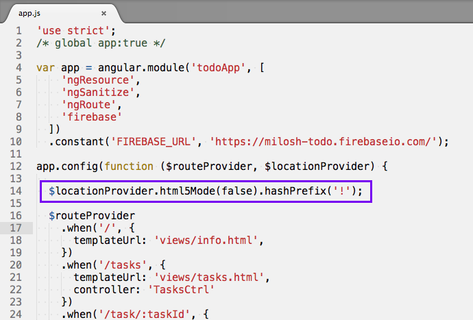
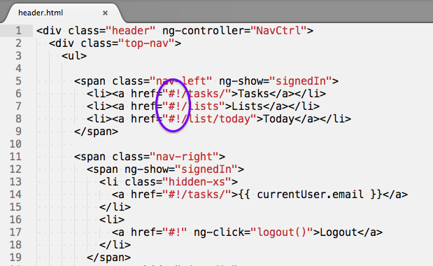

SEO Problem:
Indexing pages for single-page apps
where pages are rendered
in the browser with JavaScript.


Solution:
Pre-render your pages.
Have your server deliver
the pre-rendered pages to crawlers.
Change is coming:
Why we might still need this:
- If SEO is critical for your app
- If your JavaScript is too complex
- To be indexed by more search engines
- Using JS by crawlers is still new
- Google didn't render test site.
There are many methods for
serving pre-rendered pages.
The point here is to show one way,
and that it's quick and easy.
For this presentation:
- AngularJS app (with firebase backend), TaskMe.us
- Nginx server on Digital Ocean
- Prerender.io to serve rendered pages to webcrawlers.
How it works:
- In our routing, change the hashPrefix to #!
- Search engines will substitute _escaped_fragment_ for #! in their request.
- _escaped_fragment_ requests are served pre-rendered HTML.
How it works, cont:
- Prerender.io uses Phantom.JS to render the pages.
- Prerender.io takes care of serving the pages.
- See detailed explanation.
- For Nginx, settings are added to the nginx.conf file.
Five Step Setup
Turn off HTML5 mode
and
set the hash prefix.

Be sure to change
href's to #!

Add this meta tag
to the head of all pages:
<meta name="fragment" content="!">
For pages that don't contain a #!
Create Prerender.io
account.
Get Prerender.io token.
Modify server config.
for serving
pre-rendered HTML.
Nginx.conf → Digital Ocean - Nginx
Prerender.io will show your
cached pages.
Test your app:
Replace !# with ?_escaped_fragment_=
Should see rendered html
in view source.
in view source.